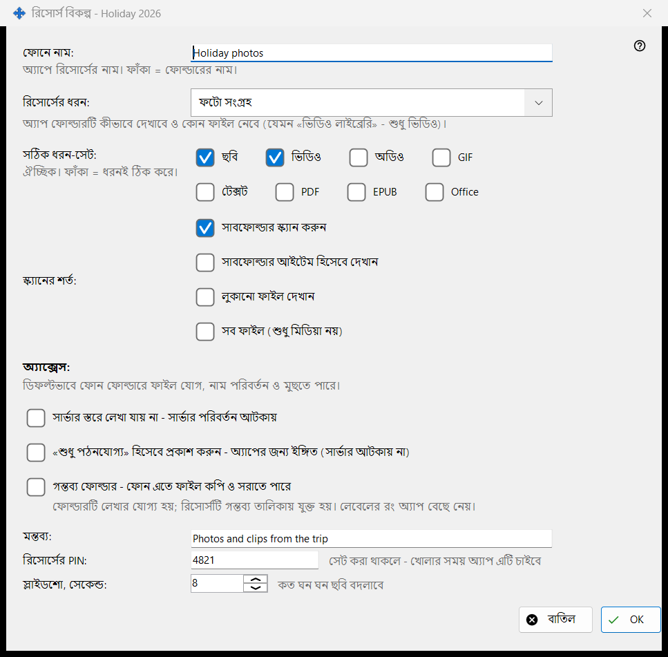
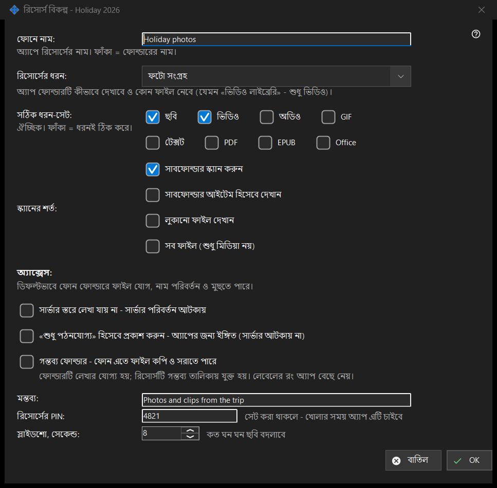

রিসোর্স বিকল্প
এটি কীসের জন্য
একটি শেয়ার করা ফোল্ডারের বিকল্প: ফোনে তার নাম, ধরন, কোন ফাইল দেখানো হবে, কারা সেগুলো বদলাতে পারবে এবং কিছু বাড়তি জিনিস। এটি মূল উইন্ডোর সম্পাদনা থেকে, ফোল্ডারের সারি থেকে এবং রিসোর্স উইজার্ড থেকে খোলে। আসল শিরোনাম ফোল্ডারের নামে শেষ হয়।


এই ক্রমে
- ফোন যে নাম দেখাবে তা ঠিক করুন।
- রিসোর্সের ধরন বা সঠিক মিডিয়া-সেট বাছুন।
- স্ক্যানের শর্ত ঠিক করুন।
- অ্যাক্সেস বাছুন।
- মন্তব্য, PIN ও স্লাইডশোর বিরতির জন্য অতিরিক্ত বিকল্প খুলুন।
- ঠিক চাপুন।
উপাদানসমূহ
নাম ও ধরন
ফোনে নাম: হলো অ্যাপে ফোল্ডারের নাম; ফাঁকা থাকলে ফোল্ডারের নিজের নাম। রিসোর্সের ধরন: দেয় সাধারণ ফোল্ডার, অডিও লাইব্রেরি, ভিডিও লাইব্রেরি, ফটো সংগ্রহ এবং নথি। সঠিক ধরন-সেট: সঠিক প্রকারগুলো বাছে (ছবি, ভিডিও, অডিও, টেক্সট, সব ফাইল); ফাঁকা থাকলে ধরনই ঠিক করে।
স্ক্যানের শর্ত
সাবফোল্ডার স্ক্যান করা, সাবফোল্ডারকে আইটেম হিসেবে দেখানো, লুকানো ফাইল দেখানো এবং শুধু মিডিয়া নয়, সব ফাইল দেখানো।
অ্যাক্সেস
ডিফল্টে ফোন ফোল্ডারে ফাইল যোগ করতে, নাম বদলাতে ও মুছতে পারে। শুধু পঠনযোগ্য সত্যিকারের তালা: সার্ভার পরিবর্তন প্রত্যাখ্যান করে। শুধু পঠনযোগ্য ইঙ্গিত অ্যাপকে কেবল সম্পাদনার বোতাম লুকাতে বলে; সার্ভার কিছু আটকায় না। গন্তব্য ফোল্ডার ফোন থেকে কপি ও সরানো ফাইল নিতে পারে; এটি লেখার যোগ্য হয় ও প্রাপকদের তালিকায় যুক্ত হয়, আর এর রং অ্যাপ বেছে নেয়।
অতিরিক্ত বিকল্প
একটি মন্তব্য (ঐচ্ছিক), রিসোর্সের জন্য একটি PIN (রিসোর্স খোলার সময় অ্যাপ তা চায়) এবং সেকেন্ডে স্লাইডশোর বিরতি। নিশ্চিত করলে সেটিং সার্ভারে পাঠানো হয়।
ম্যানেজার সেটিংস · SFTP শেয়ারিং সেটিংস · এক্সচেঞ্জ সার্ভার সেটিংস